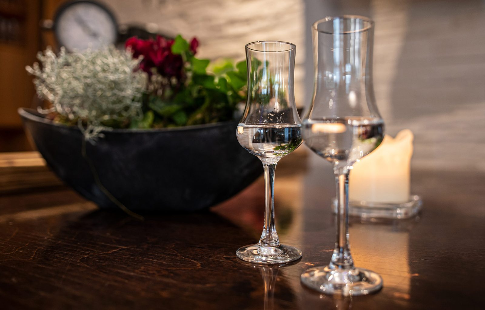

Gastgarten
Unser Gastgarten im Grünen
Ruhig gelegen direkt am Sportplatz, mit dem Münichholzer Wald gleich nebenan: ofenfrischer Schweinsbraten, hausgemachte Mehlspeisen mit Kaffee, Eisspezialitäten und Bretteljause – und danach ein Spaziergang.

Für Radfahrer & Spaziergänger
Jeder Zwischenstopp ist willkommen – auf ein Bierchen, einen Most oder ein Erfrischungsgetränk.
Süßes am Nachmittag
Hausgemachte Mehlspeisen mit Kaffee und Eisspezialitäten, direkt im Garten serviert.
Jause & Schweinsbraten
Bretteljause und ofenfrischer Schweinsbraten – die Klassiker des Hauses, auch im Freien.
Galerie
Ein Blick ins Haus
Gastraum, Stuben, Schank und Küche – Originalaufnahmen aus dem Gasthaus Zöchling. Zum Vergrößern anklicken.
Gastgarten frei? Fragen Sie kurz nach.
Bei Schönwetter ist der Garten schnell voll – mit einer Reservierung sind Sie auf der sicheren Seite.